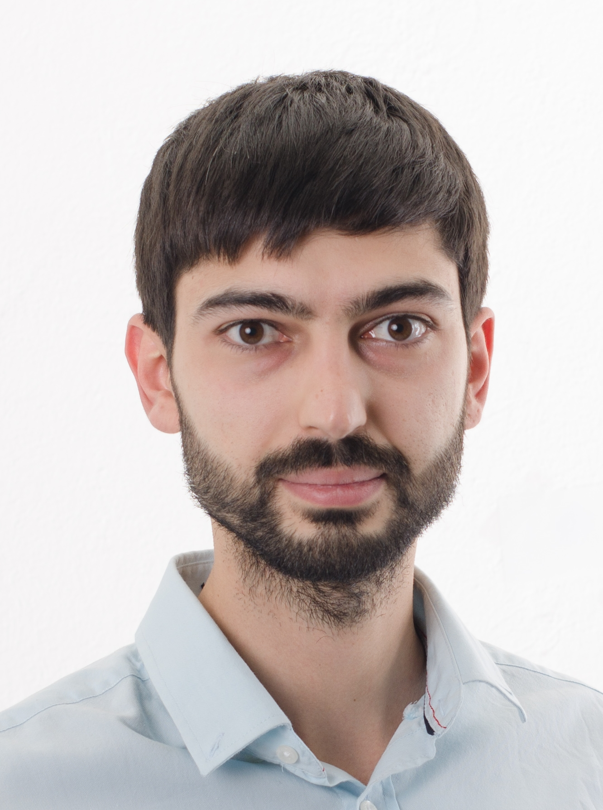

Die PDF-Version herunterladen
The online version is available at https://bitnik.xyz/cv_de.html
10.2017 - 12.2020
Projekt: GESIS Notebooks
Verantwortlichkeiten:
Referenz: Dr. Arnim Bleier
07.2016 - 09.2017
Projekt: WikiWho
Verantwortlichkeiten:
Referenz: Dr. Fabian Flöck
07.2015 - 06.2016
Backend-Entwicklung von Websites für verschiedene Kunden so wie z.B. Elbphilarmonie and Lucerne Festival
11.2014 - 03.2015
Backend-Entwicklung
11.2013 - 05.2014
04.2013 - 09.2013
11.2012 - 03.2013
10.2011 - 05.2014
M.Sc. in Informatik
Thema: Realisierung von "Incremental Learning" für automatisierte identifizierung am Beispiel von Produkterkennung
09.2006 - 06.2011
B.Sc. in Elektrotechnik (Abschluss in Ehrenliste)
Thema: Entwurf und Implementierung eines Servers auf einem Grafikprozessor für sichere RFID-Systeme
09.2009 - 02.2010
Austauschsemester